Os sete Guardiões
Os guias de cada perfil BrainHex: quem são, como falam, que voz e cor têm, onde aparecem no app e o que os PRs verificaram.
Cada perfil BrainHex tem um Guardião: o personagem que guia o aluno pela trilha, narra o material, conversa no chat e assina as notificações. A ficha de cada um é lida do código na hora de gerar esta página, e a última seção reúne o que os PRs verificaram, com as capturas.
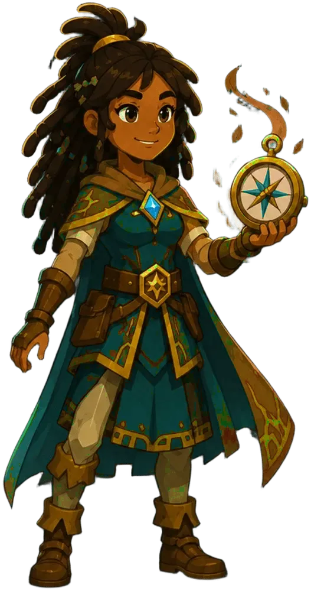
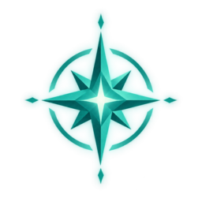
Ama descobrir novos caminhos e segredos escondidos.
Crônicas da Exploração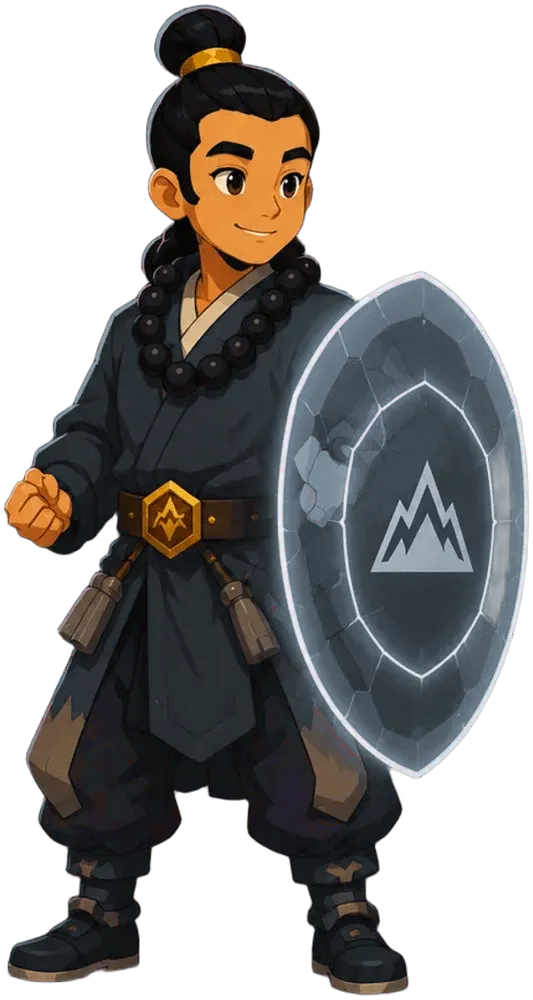
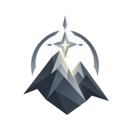
Foca em superar desafios e proteger o que conquistou.
Diretrizes de Campo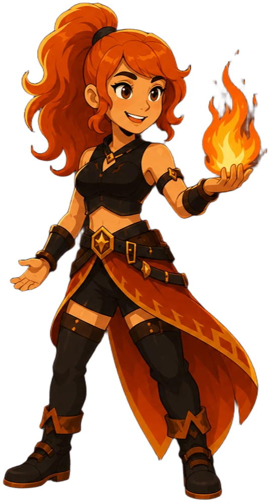
Vive pela adrenalina e riscos calculados.
Código de Impacto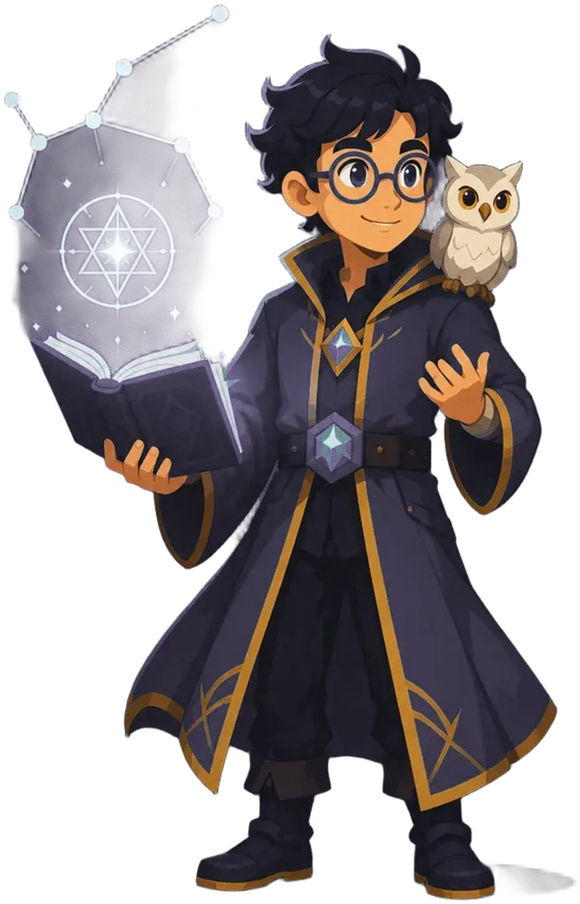
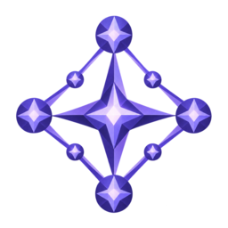
Resolve problemas complexos com lógica e sabedoria.
Arquitetura do Conceito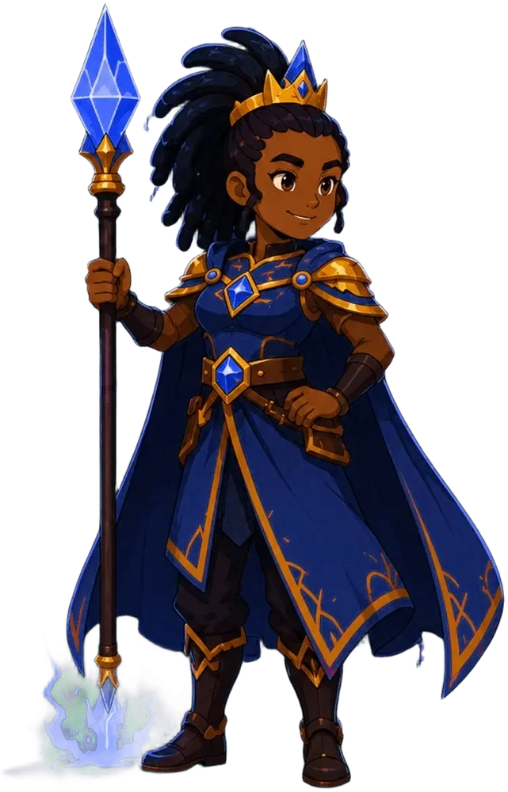
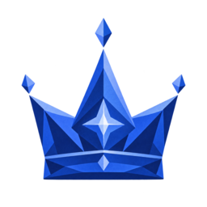
Busca poder, influência e vitórias gloriosas.
Tratado de Soberania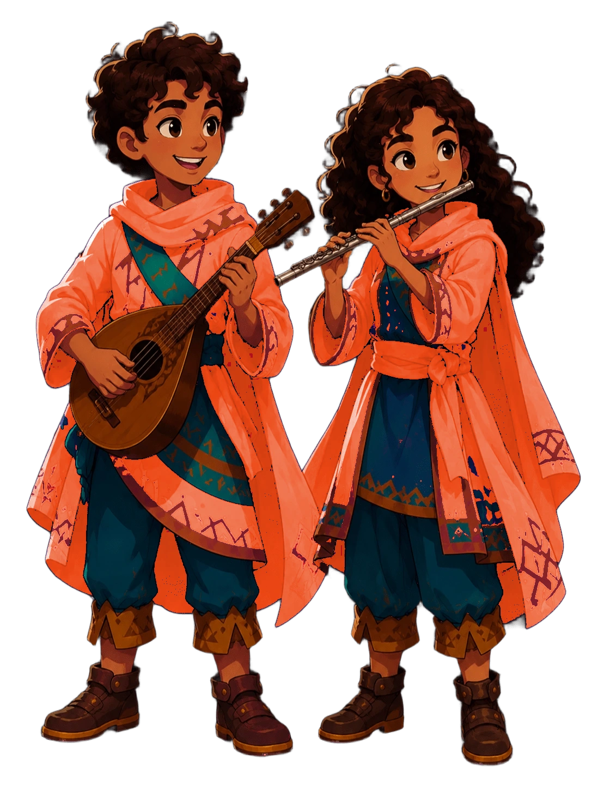
Valoriza conexões e histórias compartilhadas.
Elo da Comunidade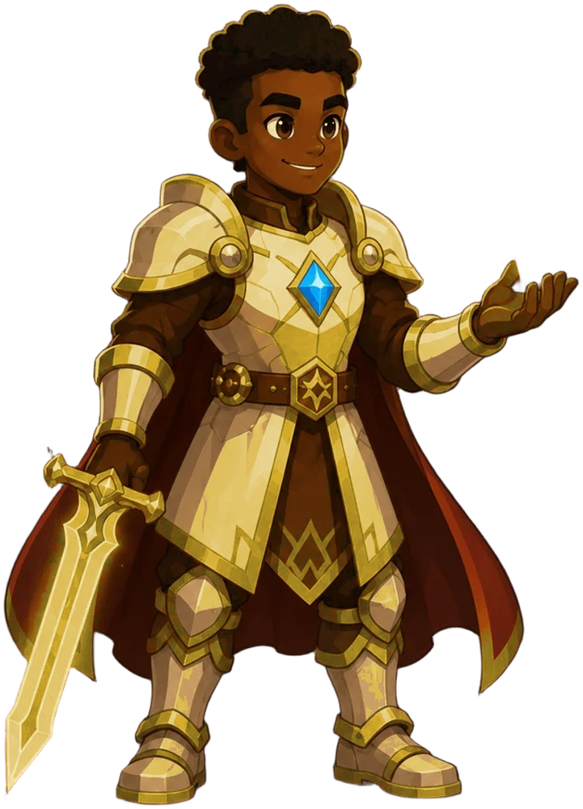
Adora completar coleções e atingir metas.
Caminho da MaestriaAmara · Explorador
| Perfil | Explorador (Seeker). Ama descobrir novos caminhos e segredos escondidos. |
|---|---|
| Enquadramento narrativo | Crônicas da Exploração |
| Voz | Leda, Gemini TTS. Amara é uma mulher jovem adulta negra, de origem africana oriental. Use português brasileiro claro, voz feminina jovem, curiosa e luminosa, ritmo médio e uma musicalidade cultural muito sutil, sem caricatura. |
| Trilha | desenhada em mapa |
| Mecânicas | chat com o Guardião sim cronômetro não batalha com boss não |
| Missões | folha “Diário de expedição”; moldura círculo, emblema map-search, progresso em pontilhado (pegadas) |
| Tela de carregamento | marcos no modo viajante, ritmo médio: “Amara está mapeando o caminho para você.” |
| Ícone do Social | shoe-print fechado → binoculars aberto |
| Áudio por bloco | alvo 3.800, teto 4.500 e mínimo 1.400 caracteres por áudio |
| Bosses | sem batalha no app; a aba de disputa abre em Eventos |
Assinatura editorial
| Tom de voz | curioso e exploratório |
|---|---|
| Ritmo | médio |
| Abertura | pergunta instigante |
| Convencimento | descoberta guiada por pistas |
| Progressão | descoberta |
| Fechamento | convite à exploração autônoma |
| Marcadores | explorardescobrirmapearpistas |
| Proibições | tom burocráticoexcesso de jargão sem contexto |
Tokens de cor
#17A398#17A398#0F6A63#97D6D1#02100FTom no console: curioso, exploratorio e investigativo.
Kenji · Sobrevivente
| Perfil | Sobrevivente (Survivor). Foca em superar desafios e proteger o que conquistou. |
|---|---|
| Enquadramento narrativo | Diretrizes de Campo |
| Voz | Schedar, Gemini TTS. Kenji é um homem jovem adulto japonês. Use português brasileiro claro, voz masculina jovem, estável e paciente, ritmo médio-lento, dicção contida e apenas uma musicalidade japonesa sutil, sem caricatura. |
| Trilha | desenhada em árvore |
| Mecânicas | chat com o Guardião sim cronômetro sim batalha com boss sim |
| Missões | folha “Plano de sobrevivência”; moldura placa com rebites, emblema heart-pulse, progresso em contorno da moldura |
| Tela de carregamento | marcos no modo respira, ritmo médio-lento: “Kenji está conferindo cada passo antes de você começar.” |
| Ícone do Social | tent fechado → campfire aberto |
| Áudio por bloco | alvo 3.200, teto 4.200 e mínimo 1.000 caracteres por áudio |
| Bosses | boss-29, boss-23, boss-24, boss-25, boss-26, boss-27 (variantes na cor do perfil) |
Assinatura editorial
| Tom de voz | pragmático e seguro |
|---|---|
| Ritmo | médio-lento |
| Abertura | problema real com risco claro |
| Convencimento | redução de risco com passos concretos |
| Progressão | fluxo/processo |
| Fechamento | checklist aplicável |
| Marcadores | evite falhasmitigarpasso a passoresiliência |
| Proibições | promessas vagasmetáforas desconectadas |
Tokens de cor
#4E5A66#4E5A66#333A42#AFB5BA#08090ATom no console: resiliente, encorajador e focado em superacao.
Ember · Aventureiro
| Perfil | Aventureiro (Daredevil). Vive pela adrenalina e riscos calculados. |
|---|---|
| Enquadramento narrativo | Código de Impacto |
| Voz | Zephyr, Gemini TTS. Ember é uma mulher jovem adulta branca, de origem europeia setentrional. Use português brasileiro claro, voz feminina jovem, brilhante e energética, ritmo dinâmico e atitude ousada, sem caricatura de sotaque. |
| Trilha | desenhada em mapa |
| Mecânicas | chat com o Guardião sim cronômetro sim batalha com boss sim |
| Missões | folha “Façanhas”; moldura círculo, emblema run-fast, progresso em anel grosso |
| Tela de carregamento | marcos no modo viajante, ritmo dinâmico: “Ember está preparando o próximo desafio.” |
| Ícone do Social | boxing-glove fechado → fire aberto |
| Áudio por bloco | alvo 2.600, teto 3.600 e mínimo 800 caracteres por áudio |
| Bosses | boss-01, boss-07, boss-17, boss-30 (variantes na cor do perfil) |
Assinatura editorial
| Tom de voz | energético e desafiador |
|---|---|
| Ritmo | dinâmico |
| Abertura | gancho de ação imediata |
| Convencimento | desafio + recompensa prática |
| Progressão | luta/superação |
| Fechamento | missão curta de execução |
| Marcadores | desafiomissãoaçãosuperação |
| Proibições | explicação excessivamente lentaabertura morna |
Tokens de cor
#D7263D#D7263D#8C1928#ED9DA8#160406Tom no console: dinamico, energetico e orientado a acao.
Idris · Estrategista
| Perfil | Estrategista (Mastermind). Resolve problemas complexos com lógica e sabedoria. |
|---|---|
| Enquadramento narrativo | Arquitetura do Conceito |
| Voz | Charon, Gemini TTS. Idris é um homem jovem adulto, norte-africano, de fala informativa e serena. Use português brasileiro claro, voz masculina jovem, raciocínio preciso, ritmo médio e uma musicalidade magrebina muito sutil, sem caricatura. |
| Trilha | desenhada em árvore |
| Mecânicas | chat com o Guardião sim cronômetro sim batalha com boss não |
| Missões | folha “Plano de ação”; moldura hexágono, emblema puzzle, progresso em contorno da moldura |
| Tela de carregamento | marcos no modo passo, ritmo médio: “Idris está organizando as peças do raciocínio.” |
| Ícone do Social | strategy fechado → chess-king aberto |
| Áudio por bloco | alvo 4.000, teto 4.500 e mínimo 1.400 caracteres por áudio |
| Bosses | sem batalha no app; a aba de disputa abre em Eventos |
Assinatura editorial
| Tom de voz | analítico e preciso |
|---|---|
| Ritmo | médio |
| Abertura | tese conceitual |
| Convencimento | lógica e evidência |
| Progressão | didática/analítica |
| Fechamento | síntese conceitual com próximos passos |
| Marcadores | hipóteseevidênciatrade-offmodelo |
| Proibições | sensacionalismosaltos sem justificativa |
Tokens de cor
#5B3FD9#5B3FD9#3B298D#B5A9EE#090616Tom no console: analitico, logico e estrategico.
Amina · Conquistador
| Perfil | Conquistador (Conqueror). Busca poder, influência e vitórias gloriosas. |
|---|---|
| Enquadramento narrativo | Tratado de Soberania |
| Voz | Kore, Gemini TTS. Amina é uma mulher jovem adulta negra, de origem africana oriental. Use português brasileiro claro, voz feminina jovem, firme e régia, ritmo dinâmico, presença de liderança e uma musicalidade cultural muito sutil, sem caricatura. |
| Trilha | desenhada em mapa |
| Mecânicas | chat com o Guardião sim cronômetro sim batalha com boss sim |
| Missões | folha “Ordens de comando”; moldura círculo, emblema shield-sword, progresso em anel |
| Tela de carregamento | marcos no modo passo, ritmo dinâmico: “Amina está posicionando você para a próxima meta.” |
| Ícone do Social | sword fechado → sword-cross aberto |
| Áudio por bloco | alvo 3.200, teto 4.200 e mínimo 1.000 caracteres por áudio |
| Bosses | boss-02, boss-08, boss-14, boss-19 (variantes na cor do perfil) |
Assinatura editorial
| Tom de voz | assertivo e orientado a resultado |
|---|---|
| Ritmo | dinâmico |
| Abertura | meta explícita e impacto |
| Convencimento | performance e resultado mensurável |
| Progressão | conquista |
| Fechamento | chamada para execução |
| Marcadores | metaimpactoresultadoexecução |
| Proibições | abordagem dispersafalta de objetividade |
Tokens de cor
#1E4FD6#1E4FD6#14338B#9AB0ED#030815Tom no console: competitivo, desafiador e focado em performance.
Mateo e Zuri · Socializador
| Perfil | Socializador (Socializer). Valoriza conexões e histórias compartilhadas. |
|---|---|
| Enquadramento narrativo | Elo da Comunidade |
| Voz | Achird, Gemini TTS. Mateo é um homem jovem adulto afro-latino. Use português brasileiro claro, voz masculina jovem, amigável e comunicativa, ritmo médio e calor humano, com musicalidade latino-americana sutil, sem caricatura.Zuri: Sulafat. Zuri é uma mulher jovem adulta afro-latina e irmã gêmea de Mateo. Use português brasileiro claro, voz feminina jovem, calorosa e empática, ritmo médio e musicalidade latino-americana sutil, sem caricatura. |
| Dupla | Zuri é irma gemea de Mateo — cresceram contando e ouvindo juntos as mesmas historias da comunidade, entao conversam com intimidade e cumplicidade de quem se conhece a vida toda. O áudio do material vira diálogo em duas vozes. |
| Trilha | desenhada em lista |
| Mecânicas | chat com o Guardião sim cronômetro não batalha com boss não |
| Missões | folha “Pedidos de Mateo e Zuri”; moldura círculo, emblema handshake, progresso em anel fino |
| Tela de carregamento | marcos no modo par, ritmo médio: “Mateo e Zuri estão reunindo a turma.” |
| Ícone do Social | forum-outline fechado → chat-processing aberto |
| Áudio por bloco | alvo 3.600, teto 4.500 e mínimo 1.200 caracteres por áudio |
| Bosses | sem batalha no app; a aba de disputa abre em Eventos |
Assinatura editorial
| Tom de voz | humano e colaborativo |
|---|---|
| Ritmo | médio |
| Abertura | história com personagem ou situação social |
| Convencimento | empatia e colaboração |
| Progressão | transformação |
| Fechamento | convite para compartilhar e aplicar em grupo |
| Marcadores | colaboraçãocompartilharcomunidadejuntos |
| Proibições | tom impessoal extremoisolamento de contexto |
Tokens de cor
#F4623A#F4623A#9F4026#FAB8A6#180A06Tom no console: colaborativo, acolhedor e dialogico.
Kwame · Realizador
| Perfil | Realizador (Achiever). Adora completar coleções e atingir metas. |
|---|---|
| Enquadramento narrativo | Caminho da Maestria |
| Voz | Orus, Gemini TTS. Kwame é um homem jovem adulto negro, ganês de origem Akan. Use português brasileiro claro, voz masculina jovem, firme e confiante, ritmo médio, disciplina e progressão clara, com musicalidade cultural muito sutil, sem caricatura. |
| Trilha | desenhada em lista |
| Mecânicas | chat com o Guardião sim cronômetro sim batalha com boss não |
| Missões | folha “Lista de feitos”; moldura círculo, emblema format-list-checks, progresso em um segmento por missão |
| Tela de carregamento | marcos no modo acumula, ritmo médio: “Kwame está separando o seu próximo marco.” |
| Ícone do Social | calendar-star-outline fechado → star-circle aberto |
| Áudio por bloco | alvo 2.800, teto 3.800 e mínimo 900 caracteres por áudio |
| Bosses | sem batalha no app; a aba de disputa abre em Eventos |
Assinatura editorial
| Tom de voz | objetivo e progressivo |
|---|---|
| Ritmo | médio |
| Abertura | objetivo mensurável |
| Convencimento | progresso incremental e ganho concreto |
| Progressão | conquista |
| Fechamento | próximo marco de evolução |
| Marcadores | progressomarcoevoluçãoresultado |
| Proibições | promessas abstratasfalta de aplicabilidade |
Tokens de cor
#C9A227#C9A227#836919#E7D59E#141004Tom no console: objetivo, progressivo e orientado a metas claras.
Especificação de uso
Qual Guardião o aluno vê
- O do perfil que o app mostra: o
perfil_ativoquando ele é representativo; senão, o de maior afinidade. - A base do material é gerada só para os perfis que a turma tem como principal ou secundário (#873). Aluno sem perfil gravado conta como Estrategista, e o Idris o acompanha.
Onde ele aparece
| Lugar | O que o Guardião faz | Regra |
|---|---|---|
| Trilha | Rosto no balão “Você parou aqui”; botão do guia com o tutorial da tela | Rosto recortado pelo próprio Image, sem overflow (#661) |
| Material em áudio | Narra o texto do tópico com a voz e a direção da ficha; Mateo e Zuri conversam | Sem caricatura de sotaque; se o Gemini TTS recusar, a voz de reserva da OpenAI segue o gênero do Guardião e o diálogo vira voz única (#767) |
| Chat | Responde em seções, com um botão por tela e o tutorial “Me mostre como” | Só para maiores de 18 anos confirmados; menor vê o campo travado e a API recusa com 403. Destinos e tutoriais são catálogos fechados (#944, #951, #953) |
| Notificações | Assina avisos e rotinas com {guia} e chama o aluno por {nome} | O nome nunca vai ao modelo: a IA escreve o marcador e o banco ou a API o trocam (#892, #901) |
| Carregamento | Frase na voz do guia e marcos no ritmo da assinatura | Texto acima de 7:1; nada se move com “Reduzir movimento” (#824) |
| Missões | A folha ganha o título do perfil | Lugar e tamanho fixos; só a pele muda (#796) |
| Batalha | O boss do tópico fala no tom do perfil | Só Survivor, Daredevil e Conqueror batalham; nome do boss único por perfil (#763) |
Regras que valem para todos
- Contraste por luminosidade. A cor-assinatura sobe de luminosidade HSL até passar no contraste, sem misturar com branco, para não desbotar o perfil. Cores de estado (sucesso, alerta, informação) são fixas.
- Um ícone, um significado. Emblema de missão, ícone do Social e ícone da Trilha não se repetem dentro do mesmo perfil, e nenhum tem outro dono no app. Os testes conferem.
- A resposta passa por um juiz. O chat confere se a resposta se apoia no tópico e no guia do app; quando reprova, entra a resposta de reserva.
- Personalização é hipótese. Casar Guardião, tom e formato com o perfil não tem ganho de aprendizagem demonstrado. O resumo “Da tipologia à trilha” mede só a aderência do texto à assinatura.
Tokens
Tokens de cor
A paleta que o console envia ao gerador. primary é a cor-assinatura, secondary é ela escurecida, accent é ela clareada e background é ela quase preta. O app e o backend derivam a variante de contraste na hora; não assuma que mudar um arquivo muda os outros.
| Guardião | primary | secondary | accent | background |
|---|---|---|---|---|
| Amara · Seeker | #17A398 | #0F6A63 | #97D6D1 | #02100F |
| Kenji · Survivor | #4E5A66 | #333A42 | #AFB5BA | #08090A |
| Ember · Daredevil | #D7263D | #8C1928 | #ED9DA8 | #160406 |
| Idris · Mastermind | #5B3FD9 | #3B298D | #B5A9EE | #090616 |
| Amina · Conqueror | #1E4FD6 | #14338B | #9AB0ED | #030815 |
| Mateo e Zuri · Socializer | #F4623A | #9F4026 | #FAB8A6 | #180A06 |
| Kwame · Achiever | #C9A227 | #836919 | #E7D59E | #141004 |
Custo em tokens
Projeção do resumo “IA onde importa” (preços de 3 e 4/11/2026), não medição:
- Um material-base (texto e áudio de um tópico para um perfil): cerca de 38 mil tokens de entrada e 31,2 mil de saída no Gemini 3.6 Flash, mais 350 de entrada e 2.336 de saída no TTS, com 50% de folga para novas tentativas. Dá US$ 0,254, cerca de R$ 1,39.
- Cada mensagem no chat leva o guia do app inteiro, cerca de 8 mil caracteres a mais, na resposta e no juiz (#944).
- Chamadas do TTS: o preço é por caractere, mas o limite do plano gratuito é por pedido. Por isso o áudio é juntado por bloco, com o tamanho de cada perfil na ficha (#911).
Evidências nos PRs
O que cada PR afirmou ter visto e o que deixou de fora, nas palavras da própria descrição. Os números são do repositório canônico, que é privado; as capturas foram copiadas para cá.
- Seções com botão por tela; Ranking fechado não ganha botão (Conqueror adulto, 390×844 e tela larga)
- “Me mostre como” abre o tour na tela certa e termina em “Entendi”
- Gemini de verdade, dados fictícios: três perguntas devolveram seções com destino, duas com o tutorial certo
- pytest 3371 · mobile 1323 testes, 0 falhas
- Android e iOS
- 11 dos 12 tutoriais percorridos em tela
- o fluxo inteiro com API e modelo reais
- Conqueror em tela larga: Amina aparece na Trilha e o chat abre
- No módulo com batalha, o botão do Guardião saiu de cima do cartão (tela larga e 390×844)
- Android e iOS
- Mastermind, Achiever, Survivor e Daredevil no módulo
- resposta do modelo para os perfis novos
- Seeker adulto: o painel responde e mostra os botões Loja e Coleta e acessos
- Social fechado: o botão do Social não aparece mesmo com o destino na resposta
- Menor de idade: campo travado em “Mentor de IA desligado (só para maiores de 18)” e nenhuma requisição sai
- Gemini, dados fictícios: função existente leva à tela certa; função inexistente responde que não encontrou
- Android e iOS
- tela estreita
- o subcaminho /aluno/ publicado
- O nome não vai ao modelo: ele escreve {{nome}} e a API troca pelo primeiro nome
- O histórico volta pseudonimizado, então o modelo vê quando acabou de usar o nome
- com que frequência o Gemini passa a usar o nome
- Texto por tipo × perfil no banco, com {nome} e {guia} trocados por gatilho
- E2E no Postgres local: 8 casos, inclusive aluno sem nome e falha que não derruba a escrita
- paridade automática dos nomes dos guias com brainHex.ts (conferida à mão)
- Todo texto passa de 7:1 sobre o fundo e sobre o cartão nos 8 casos
- Matiz e saturação da cor-assinatura preservados: só a luminosidade sobe
- Em 320 px nada vaza, nem “Socializador · Mateo e Zuri”
- aparelho nativo
- “Reduzir movimento” ao vivo na web
- a transição na duração real, quadro a quadro
- 22 casos em test_base_so_perfis_da_turma: principais e secundários, turma vazia, pedido explícito, falas do boss
- as consultas novas contra o banco real
- Os 7 perfis na barra de baixo, fechado e aberto (360 pt)
- Lateral do desktop: Social bloqueado antes da turma, com contador depois
- em aparelho
- o número zerando ao abrir uma conversa de verdade
A captura é da versão desta PR. Os pares mudaram depois, com a usuária; os de hoje estão nas fichas acima, lidos do código.
- Os 7 perfis em 360×640 e 430×932, com a folha aberta
- variantesDoRastreador.test.ts falha se um emblema de missão aparecer fora das missões
- o ícone com uma conta real (as capturas usam dados de exemplo)
- No navegador: Achiever e Socializer veem “Eventos”; Conqueror vê “Arena”
- aparelho nativo
- Medido no conteúdo 282: socializer e survivor tinham 8 blocos de texto e só 2 áudios
- microservice: 506 de 506 testes
- a contagem real de blocos do enriquecimento do conteúdo 282
- Produção, só leitura: 7 de 7 áudios falharam (5 por cota 429, 2 por crédito 402)
- Com o código antigo, o teste reproduz os 30 s de espera e o 402; com a correção, 1 pedido à OpenAI e sem espera
- a geração da turma com a correção no ar
- Produção, só leitura: conqueror e daredevil tinham o mesmo boss, “Sentinela das Partes Fracionadas”
- 59 testes de boss_falas; a trava do tópico esperou 0,51 s num Postgres 16 local
- a qualidade das falas que o modelo gera com o prompt novo
- O teste decodifica cada PNG de boss e confere o matiz contra a cor oficial (tolerância de 25°)
- Teste de mutação: pôr o boss-29 no Conqueror faz o teste falhar
- no app logado, com um aluno de cada perfil
- Num Samsung de verdade, com o perfil Estrategista: o rosto do Idris aparece no balão da árvore
- Duas formas de recorte falharam no Android antes da terceira
- a linha da lista, vista em tela
Fontes
Os dados das fichas vêm destes arquivos, lidos na geração:
microservice/src/constants/brainHex.tsmicroservice/src/constants/guardianVoices.tsapi/app/services/personalizacao.pyfrontend/src/lib/personalizacao-theme-guide.tsmobile/src/utils/brainHexCapabilities.tsmobile/src/components/missoes/variantesDoRastreador.tsmobile/src/utils/telaCarregamento.tsmobile/src/services/social/socialDestaque.tsmicroservice/src/utils/audioJunction.tsmobile/src/utils/contentBossVisual.ts
A forma da trilha (mapa, árvore ou lista) é escolhida por view, sem um mapa único no código. Ela vem da Figura 2 do resumo “Da tipologia à trilha” e das capturas da #796.